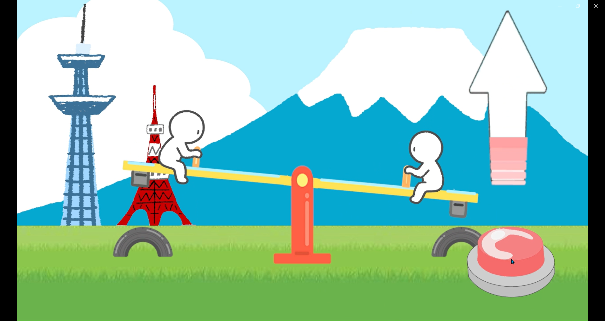
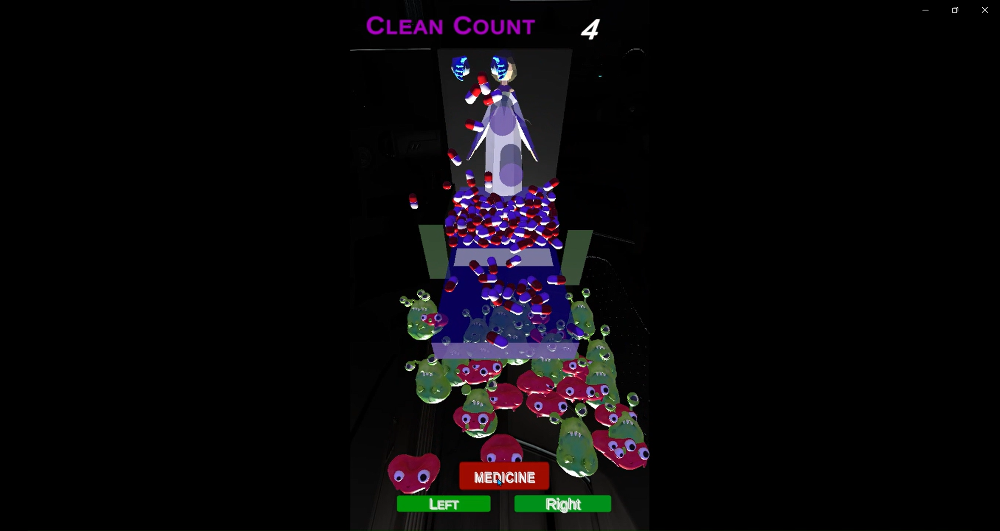
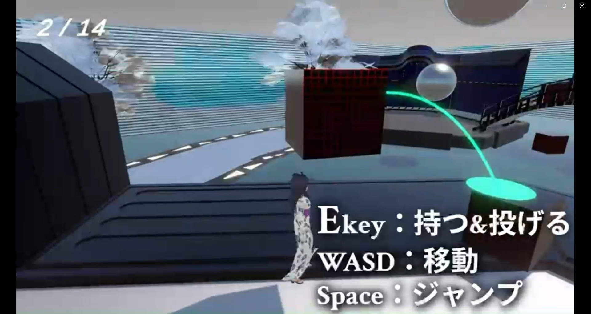
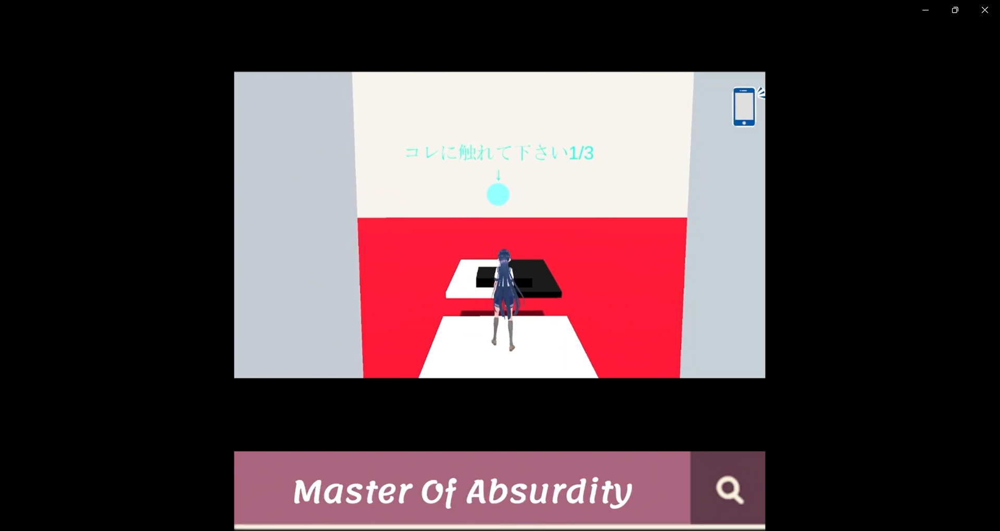
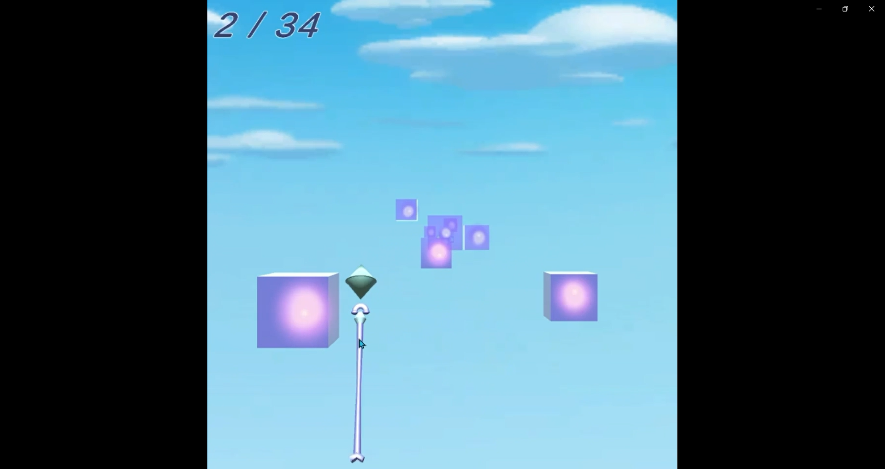
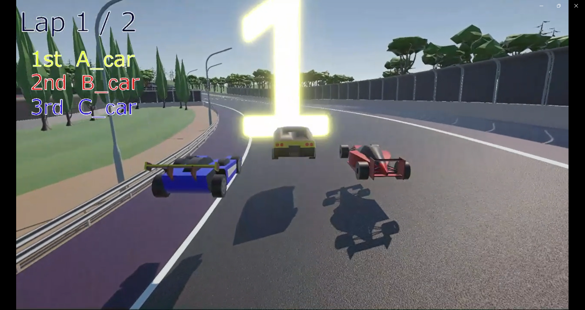

GAME DESIGN PORTFOLIO
しろまるの制作ノート
プロフィール
しろまる
ゲーム制作を学ぶ専門学生です。
1年半で15作品を制作。企画を考え、形にし、遊びやすさを試しながら作ってきました。
目指すプランナー像
統一された世界観の中で、プレイヤーが試行錯誤し、成長を実感できるゲームを作りたいです。
分かりやすいルールと、努力や工夫を認める仕掛けで、「もう一度」と思える体験を目指します。
日々を頑張る人が、現実を少し離れて夢中になれる居場所を作りたいです。
使用ツール・できること
企画・ルール設計
遊び心地の調整
企画書：PowerPoint
ゲーム制作：Unity
音楽：Medly / GarageBand
画像：ibisPaint
Maya：Sky HITの杖モデル
授業で学習：Photoshop（基礎操作）
投稿先：unityroom / itch.io（1作品）
掲載作品は、すべて一人で制作しています。
企画のアイデア出しや整理、プログラミングにChatGPTを活用しています。
UIは自分で制作するか、素材を使用しています。
すべてブラウザ上で遊べます！
全作品プレイ時間10分以内！
👑 特に見てほしい代表作
PICKUP #01
労うトマト
ジャンル：バランスゲーム
制作期間：1か月半
Unity / C# / ibisPaint / GarageBand
担当：企画・制作・実装
目指した体験：
落とすと悔しい。
バランスをとること自体が楽しい体験。
企画書は横にスクロールできます。画像を押すと大きく表示します。
▶ unityroomで遊ぶ
✎ テストプレイからの改善
シーソーがプレイヤーに対して軽く、プレイヤーが落ちやすかったため、重さのバランスを調整しました。
プレイヤーキャラが簡単に落ちなくなり、バランスを調整するというゲームの核が際立ちました。
📌 残っているバグ・今後の研究メモ
方向転換でプレイヤーが滑って見えるため、回転速度を合わせたいと考えています。
PICKUP #02
SPACE BALL
ジャンル：弾避けアクションゲーム
制作期間：2週間
Unity / C# / Medly
担当：企画・制作・実装
目指した体験：
曲を最後まで聴いてほしいという思いから、曲が終わるまで玉を避けるゲームを企画しました。
避けられたときは自分で操作して切り抜けた手応えがあり、避けられなかったときは操作がうまくいかなかったと感じる体験を目指しました。
企画書を押すと大きく表示します。
企画書の構成・文章整理にChatGPTを活用。企画内容とゲーム仕様は自身で検討・調整。
▶ unityroomで遊ぶ
✎ テストプレイからの改善
玉を円形から楕円形に変更しました。
回転しながら飛んでくる玉は、縦向きになったときに弾の間を通りやすくなると考えました。
変更後は避けやすくなり、狙った遊びやすさにつながりました。
📌 残っている課題・今後の研究メモ
音楽を目立たせるため、当たったときは音楽を止める演出にしました。
音楽を邪魔せずに衝突を伝えるエフェクトも加えると、より分かりやすくできそうです。
3ステージ構成ですが、ステージ3がステージ2より簡単に感じられます。
曲の盛り上がりに合わせて難しくする狙いでしたが、難易度の上昇が緩やかになりました。
曲の展開と障害物の量や速さを合わせ、意図した難易度カーブになるよう調整したいです。
掲載作品（13作品）
制作した順に並べています。作品名から各ゲームを遊べます。
01 めざせ3776富士ジャンプ （初めて制作した作品）

ジャンル：ワンクリックジャンプゲーム
制作期間：2週間半
目指した体験：ワンクリックで遊べて、失敗しても成功しても楽しめる体験。
▶ unityroomで遊ぶ
02 MAGIC_TILE

ジャンル：空中移動アクションゲーム
制作期間：2か月
目指した体験：空中を移動するときのハラハラ感。
▶ unityroomで遊ぶ
03 末期Dr.オフィーリア

ジャンル：プッシャーゲーム
制作期間：2週間
目指した体験：コイン落としを楽しくするため、落下先にエネミーを配置。
▶ unityroomで遊ぶ
04 Memory Breakdown

ジャンル：パズルアクションゲーム
制作期間：1か月
目指した体験：3D空間で神経衰弱を遊び、「忘れてしまうこと」をエネミーとして表現。
▶ unityroomで遊ぶ
05 絵あわせゲーム ～おじいちゃんと孫の6年間～

ジャンル：絵あわせゲーム
制作期間：1週間
目指した体験：神経衰弱にタイミングアクションを組み合わせた体験。
▶ unityroomで遊ぶ
06 ライブ配信：３年付き合った彼氏に振られたけど 友達が突撃させてくれるらしい まじありがとう

ジャンル：突撃アクションゲーム
制作期間：5日
目指した体験：移動だけでエネミーを撃破できる楽しさ。
▶ unityroomで遊ぶ
07 SPACE BALL

ジャンル：弾避けアクションゲーム
制作期間：2週間
目指した体験：曲を最後まで聴いてもらえるよう、曲が終わるまで玉を避けるゲームにしました。
▶ unityroomで遊ぶ
08 Bubble Hole

ジャンル：弾避けアクションゲーム
制作期間：2週間
目指した体験：きれいな弾幕を避ける背徳感。
▶ unityroomで遊ぶ
09 Master of Absurdity（おためし版）

ジャンル：理不尽ステージアクションゲーム
制作期間：3週間
目指した体験：予想できない動きをするステージで、理不尽さを楽しむ体験。
▶ unityroomで遊ぶ
10 シロクシーロ

ジャンル：状態変化エネミー捕獲ゲーム
制作期間：1週間
目指した体験：素早くタッチしてゴーストを捕獲する楽しさ。
▶ unityroomで遊ぶ
11 sky HIT

ジャンル：スピードタッチゲーム
制作期間：1週間
目指した体験：当てるたびに速くなる緊張感。「あともう一個だった」という悔しさから、もう一度遊びたくなる体験。
▶ unityroomで遊ぶ
12 労うトマト

ジャンル：バランスゲーム
制作期間：1か月半
目指した体験：落とすと悔しい。バランスをとること自体が楽しい体験。
▶ unityroomで遊ぶ
13 Change Your Ranking

ジャンル：チェンジランキングカーレースゲーム
制作期間：1週間
目指した体験：最後まで順位が予測できない、運試しのような体験。
企画：学校の先生の原案をもとに、順位に関係なく数字に当たるルールへ変更し、順位が入れ替わる機会を増やしました。
▶ itch.ioで遊ぶ